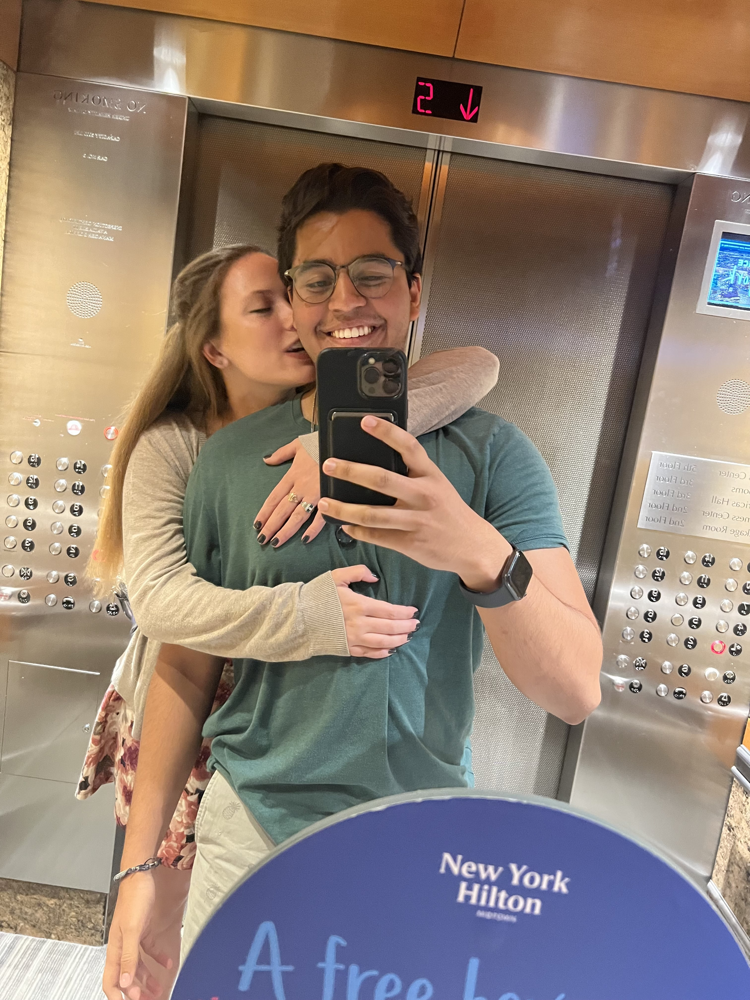

Dear Rikki,
I guess I'll start by once again saying Happy Four Year Anniversary :)
As you're more than aware, we've had our ups and downs. We've had some trying moments and some really happy and thrilling ones. That's all very cliche, but I think that it's more than fair for our situation. That being said, the one thing that's on my mind right now and really something that never leaves my mind is this one thought: I wouldn't trade it for anything. And I do really think about that a lot. I wonder how different my life would be if I never met you. If we had never done the things that we've done together. And all together, thinking of every single experience I can remember with you, I can say with absolute 100% confidence that there's no one else I could have done it with. For all the things I have accomplished, I have you to credit for always being there. For supporting me, keeping me sane, and on track. I truly don't believe I could have done what I have done if it wasn't for you.
But that's only half of it: we've had so many firsts together too, haven't we? We learned how to be homeowners and we learned how to skydive and we learned how to cook and how to do computer science and how to communicate and we've visited so many places from our first roadtrip to Omaha together to our latest trip to New York and experienced so much newness together. There's a 1000 things neither one of us would have experienced and perhaps been worse off if we had never met or made it this far, and I am so eternally grateful that we did. I am so eternally grateful for you.
You are the love of my life no matter what. You're so beautiful and talented and sweet and kind and funny and as much as I try to tell you those things, it'll never be to the extent that I mean them. You are beyond words and I am willing to do whatever it takes to have 100 more anniversaries with you ;)
Here is to many more firsts, much more growth, and a future as bright as you. I love you so much.
Yours,
Hirsh
